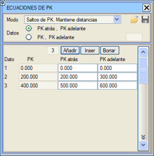
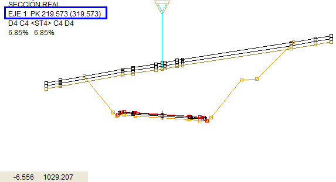
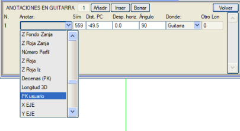

| |
|
KİLOMETRE DENKLEMLERİ
|
Genel sekmesinden ve Düşey Güzergah > Eklentiler'den erişilebilen bu diyalog kutusu, kilometre sütunları aracılığıyla kilometrelerdeki süreksizlikleri tanımlamayı sağlar. İki farklı mod vardır: KM ATLAMALARI modu ile üç sütunumuz vardır. Birincisinde orijinden itibaren sürekli kilometre gösterilir, ikincisinde (KM geri) kullanıcı atlamanın gerçekleşeceği kilometre değerini girer ve üçüncüsünde (KM ileri) kullanıcı o noktadaki yeni kilometre değerini girer. KM ileri, KM geri'den büyük veya küçük olabilir. Bu yöntem mesafeleri korur. Verileri girmenin iki yolu vardır: KM geri ve KM ileri kullanarak veya KM ve KM ileri kullanarak. İkincisini kullanırken, KM verisini klavyeyi kullanarak veya fare ile tıklayarak girebiliriz. Diğer mod ise SÜREKLİ KM'LER modudur. Bu durumda sadece iki sütun vardır: solda orijinal kilometreler, sağda kullanıcı kilometreleri. Her orijinal kilometreye bir kullanıcı kilometresi atarız ve program ara kilometreleri orantılı bir şekilde dağıtarak mesafeleri yeniden ölçeklendirir. Hangi yöntem kullanılırsa kullanılsın, kullanıcı kilometresi ISPOL#.per dosyası hesaplandığında her bir enkesitin bir niteliği olarak kaydedilir ve Enkesit Editörü'nde, bir ISPOL#.per dosyası düzenlenirken, DİĞER VERİLER bölümünde sürekli kilometre ve kullanıcı kilometresi (parantez içinde) gösterilir. Kırmızı Kotlar menüsünün grafik penceresinde, ölçekli grid ile birlikte kilometre denklemleri de gösterilir. Eğer kilometre denklemlerinde veri varsa, o zaman düşey güzergah menülerinin bilgi panelinde ve KM, Mesafe aracında hem gridde hem de raporlarda matematiksel kilometrenin yanında kullanıcı kilometresi de gösterilecektir. Veri varsa, bu kilometre, düşey güzergah menülerinin bilgi panelinde olduğu gibi Enkesit ve Anlık Enkesit pencerelerinde de gösterilecektir. 
Enkesit paftalarının çizimi için, enkesit oluşturma şablonunu (.gut) düzenlemek ve oradan, [SABİT ŞABLON] içindeki [KM VE KM FARKI ETİKETLEMESİ]'ne gidip Kullanıcı KM seçeneğini işaretlemek gerekecektir.  Boykesit paftalarının çizimi için, ilgili şablonuna (.gui) [ARAZİ] içindeki [KESİT ALT BİLGİLERİ]'ne bir Kullanıcı KM verisi de eklenmelidir. 
Paftalar için yapılabilecek diğer yapılandırmalar şunlardır:
Bu menünün bilgileri, 2/4/2024 revizyonundan itibaren .cej dosyasında saklanır. Önceki projelerden dosyalar yüklediğimizde, .vol dosyasında bulunan bilgiler otomatik olarak .cej dosyasına aktarılacaktır. |